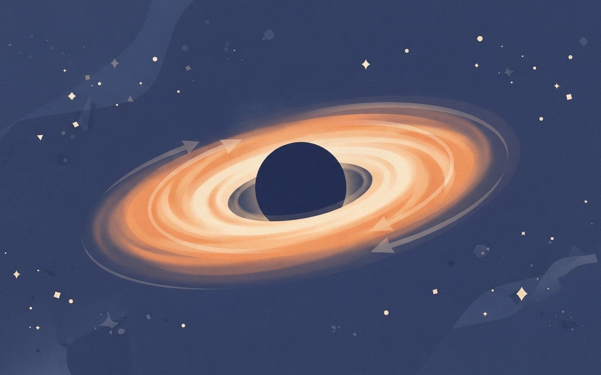
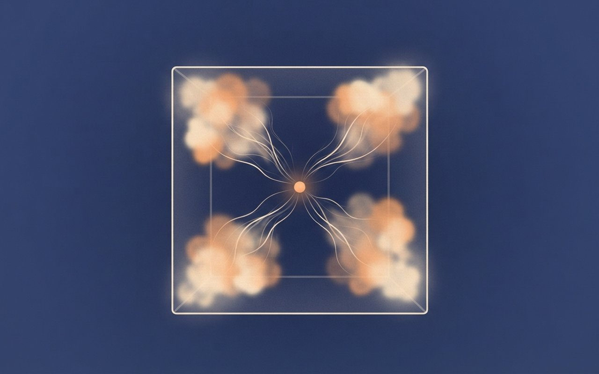

초기 우주의 '작은 붉은 점' QSO1은 블랙홀이 전체 질량의 약 3분의 2를 차지합니다. 가까운 은하에서 블랙홀이 차지하는 비율의 수천 배입니다. 존스 홉킨스대 연구진은 이런 블랙홀이 별보다 먼저 생긴 원시 블랙홀에서 자랐을 수 있는지 따져 봤고, 논문은 Physical Review Letters에 실려 11월 5일 보도됐습니다. 세 갈래 길 중 하나는 배제됐고, 하나는 어렵고, 하나는 일부 조건에서 가능하다는 결과입니다. 원시 블랙홀은 아직 직접 확인된 적이 없다는 점까지, 여섯 장에 걸쳐 따라가 봅니다.
🎧 듣기 · 약 4분
🎧 낭독 원고 보기
11월 8일 일요일, 우주·과학 브리프입니다. 오늘은 초기 우주의 작은 붉은 점 하나가 원시 블랙홀에서 자랐을 수 있는지 따져 본 이야기입니다.
블랙홀이 은하 전체 질량의 약 3분의 2를 차지합니다. 제임스웹 우주망원경이 찍은 작은 붉은 점 QSO1의 중심 블랙홀은 태양 질량의 약 5천만 배이고, 가까운 은하에서 블랙홀이 차지하는 비율의 수천 배입니다. 빅뱅 약 7억 년 뒤의 모습이고 크기는 약 1,300광년입니다. 이 점의 질량을 가스 운동으로 직접 잰 결과는 5월에 공개됐고, 이번 주 소식은 이 관측 결과를 별보다 먼저 생긴 원시 블랙홀로 설명할 수 있는지 따져 본 논문입니다. 가까운 은하에서는 블랙홀이 은하 질량의 아주 작은 부분일 뿐이어서, 같은 방식으로 자랐다고 보기 어렵다는 점이 출발점입니다.
이 질량은 가스가 도는 속도로 쟀습니다. 연구진은 NIRSpec이라는 장비로 수소 가스의 속도 지도를 그렸고, 가스가 행성이 태양을 돌듯 중심 둘레를 돈다는 것을 확인했습니다. 질량 대부분이 중심 블랙홀에 모여 있다는 뜻이고, 단순한 중력 법칙이라 가스 속도에서 블랙홀 질량을 직접 계산할 수 있었습니다. QSO1은 은하단 Abell 2744의 중력렌즈로 확대돼 하늘의 세 곳에 보이고, 빛은 130억 년 넘게 날아왔습니다. 금속 함량은 태양의 0.5퍼센트 미만입니다.
그렇다면 이 블랙홀은 어떻게 생겼을까요. 존스 홉킨스대 연구진은 원시 블랙홀의 가능성을 따졌습니다. 원시 블랙홀은 별과 은하 먼지, 무거운 원소가 생기기 전부터 존재했을 수 있는 이론상의 천체입니다. QSO1은 나이와 크기, 거의 수소와 헬륨뿐인 성분 때문에 후보로 거론됐습니다. 작은 붉은 점은 지금까지 약 100개가 목록에 올랐고, 원시 블랙홀의 직접 증거는 한 번도 발견되지 않았습니다.
논문은 세 가지 길을 따졌습니다. 처음부터 무거운 블랙홀로 생기는 길은 우주배경복사 관측 한계로 배제됐습니다. 가벼운 원시 블랙홀이 합쳐 자라는 길은 필요한 암흑물질 덩어리가 드물어 어렵습니다. 중간 질량 원시 블랙홀이 가스를 빨아들여 자라는 길은 일부 조건에서 가능하다는 결과였습니다.
다른 연구진의 시뮬레이션도 비슷한 결론에 닿았습니다. 태양 질량의 약 5천만 배인 원시 블랙홀을 씨앗으로 놓았더니, 별 형성이 늦게 시작되고 금속량이 태양보다 낮게 유지되는 QSO1 같은 천체가 만들어졌습니다. 다만 컴퓨터 속에서 가능했다는 것이 실제로 그랬다는 증거는 아닙니다.
그래서 이번 연구는 개념 증명입니다. 연구를 보도한 phys.org는 원시 블랙홀이 QSO1 크기와 소용돌이치는 원반을 갖추려면 특별한 조건이 필요하다고 전했습니다. 한 천체로 가능성을 시험했을 뿐 원시 기원을 입증하지는 않습니다. 다음 단계는 약 100개 작은 붉은 점 가운데 몇 개가 원시 블랙홀일 수 있는지 따지는 것이고, 입증하려면 별로는 만들 수 없을 만큼 가벼운 블랙홀이나 별보다 오래된 블랙홀을 찾아야 합니다.
정리하면, 확인된 것은 QSO1의 블랙홀이 약 5천만 태양질량이고 전체 질량의 약 3분의 2라는 점입니다. 추론인 것은 이 블랙홀이 원시 블랙홀에서 자랐을 가능성이며, 열려 있는 것은 그것을 가려낼 관측입니다. 원시 블랙홀 발견이라는 제목보다 원시 블랙홀일 수 있는 길이 남았다는 말이 정확합니다. 사진 속 붉은 점 하나가 우주 초기의 블랙홀이 어떻게 태어났는지 묻고 있고, 그 답은 앞으로의 관측이 가려 줄 것입니다. 이번 논문은 심사를 통과했지만 결론은 어디까지나 가능성의 목록입니다.
이상 우주·과학 브리프였습니다. 좋은 한 주 보내세요.
Premise — 블랙홀이 더 무겁다
重
QSO1
블랙홀이 은하 질량의 약 3분의 2 — 빅뱅 7억 년 뒤 '작은 붉은 점'의 5천만 태양질량
ESA/Webb에 따르면 QSO1은 은하단 Abell 2744 뒤에 있는 '작은 붉은 점'으로, 중심 블랙홀의 질량은 태양의 약 5천만 배다. 이는 QSO1 전체 질량의 약 3분의 2로, 가까운 은하에서 블랙홀이 차지하는 비율의 수천 배다. 이미지 설명은 블랙홀이 주변 은하 물질의 약 2배라고 쓴다.
이 천체는 빅뱅 약 7억 년 뒤의 모습이고 크기는 약 1,300광년이다. 이번 주 새 소식은 이 관측이 아니라 5월에 나온 이 결과를 '별보다 먼저 생긴 원시 블랙홀'에서 설명할 수 있는지 따져 본 심사 통과 논문(11월 5일 보도)이다.
대상Abell2744-QSO1 · 작은 붉은 점(Little Red Dot)
블랙홀약 5천만 태양질량 · 이전 간접 추정은 약 4천만(ESA/Webb)
비중QSO1 전체 질량의 약 3분의 2 · 주변 은하 물질의 약 2배(ESA/Webb)
크기·시기지름 약 1,300광년 · 적색이동 약 7 · 빅뱅 약 7억 년 뒤
공개관측 결과·사진 2026-05-27(ESA/Webb) · 원시 블랙홀 논문 보도 2026-11-05
확인 한계질량은 가스 운동으로 계산한 값이며 동료 심사 단계는 ESA/Webb 발표(Nature·MNRAS 언급) 기준
🔭 알고 보면 달라지는 것
이 카드의 요점은 '블랙홀이 은하보다 무겁다'는 점이다. 가까운 은하에서는 블랙홀이 은하 질량의 아주 작은 부분일 뿐이어서, 같은 방식으로 자랐다고 보기 어렵다.
ESA/Webb — QSO1 사진·설명ESA/Webb — 보도자료 weic2609ESA/Webb 이미지 페이지 weic2609a·보도자료 weic2609(2026-05-27) · 사진은 같은 현상(작은 붉은 점)의 무관한 예시 — esawebb.org/images/littlereddots(2025-01-14), 크레디트는 이미지 페이지 원문(QSO1 자체 사진 weic2609a는 크레디트가 길어 출처 장 넘침으로 제외) · 이번 주 소식(원시 블랙홀 논문)은 카드 3~6 출처 (확인 2026-11-08)
블랙홀이 은하의 약 3분의 2
작은 붉은 점 QSO1의 블랙홀은 태양의 약 5천만 배예요. 빅뱅 약 7억 년 뒤인데 전체 질량의 약 3분의 2를 차지해요. 사진은 무관한 예시예요.
5천만 배|태양 질량 대비 블랙홀
Measure — 가스의 속도
測
측정 방법
가스가 도는 속도로 쟀다 — 렌즈 덕에 한 천체가 하늘에 세 번 보인다
ESA/Webb에 따르면 연구진은 NIRSpec의 IFU로 수소 가스의 속도 지도와 원소 분포를 얻었다. 가스는 행성이 태양을 돌듯 중심 둘레를 도는 케플러 운동을 했고, 이는 질량 대부분이 별이 아니라 중심 블랙홀에 모여 있다는 뜻이다. 단순한 중력 법칙을 따르므로 가스 속도에서 블랙홀 질량을 직접 계산할 수 있었다.
QSO1은 은하단 Abell 2744(판도라 은하단)의 중력렌즈로 확대돼 하늘의 세 곳에 보인다. 빛은 130억 년 넘게 날아왔고, 금속 함량은 태양의 0.5% 미만이라 가장 '깨끗한' 은하 환경 중 하나로 소개된다.
장비NIRSpec IFU(속도·원소 지도) · NIRCam(영상)
원리가스의 케플러 운동 → 질량 대부분이 중심 블랙홀에 있다는 신호
렌즈Abell 2744(판도라 은하단)가 확대 · 하늘의 세 곳에 보임
여행빛이 130억 년 넘게 이동
금속량태양의 0.5% 미만
확인 한계ESA/Webb는 결과를 '시사'라고 표현하며 블랙홀의 기원을 단정하지 않음
🔭 알고 보면 달라지는 것
블랙홀 질량은 보통 간접 방법으로 추정한다. 이 연구는 가스가 도는 속도라는 직접 단서에서 질량을 계산했고, ESA/Webb는 이를 초기 우주 블랙홀 질량의 첫 직접 측정이라고 소개한다.
연구진은 NIRSpec으로 가스의 속도를 지도로 그렸어요. 가스가 도는 속도로 질량을 직접 계산했고, QSO1은 렌즈 덕에 하늘의 세 곳에 보여요.
3곳|하늘에서 QSO1이 보이는 자리
A dark compact sphere at the center with a thin swirling disk of glowing gas orbiting it with faint arrow trails showing orbit direction, deep space background, conceptual schematic, not a real photograph, no text

Hypothesis — 별보다 먼저
原
원시 블랙홀
별보다 먼저 생겼을 수 있는 블랙홀 — 원시 블랙홀은 아직 한 번도 직접 확인되지 않았다
존스 홉킨스대 연구진은 QSO1이 원시 블랙홀을 품었을 가능성을 따졌다. phys.org는 원시 블랙홀을 별과 은하 먼지, 무거운 원소가 생기기 전부터 존재했을 수 있는 이론상의 천체로 설명한다. QSO1은 나이와 크기, 그리고 수소와 헬륨이 거의 전부인 성분 때문에 후보로 거론됐다.
지금까지 약 100개의 작은 붉은 점이 목록에 올랐다. 원시 블랙홀의 직접 증거는 한 번도 발견되지 않았다. 논문은 Physical Review Letters에 실렸고(DOI 10.1103/6y1w-87pd), 보도는 11월 5일 phys.org에 나왔다.
논문"Primordial-Black-Hole-Based Pathways to Little Red Dots", Physical Review Letters
저자V. De Luca, L. Del Grosso 외(존스 홉킨스대 등)
근거QSO1의 나이·크기·성분(거의 수소·헬륨, 무거운 원소 부족)
규모작은 붉은 점 약 100개 목록(phys.org)
확인 한계PRL 정확한 게재일 미확인 · ESA/Webb 이미지 설명은 '수백 개'로 표현해 매체별 표기가 다름
🔭 알고 보면 달라지는 것
원시 블랙홀은 '있을 수도 있다'는 이론이지 관측된 천체가 아니다. 이번 연구도 QSO1이 그렇다고 주장하는 것이 아니라 그럴 수 있는 길이 있는지를 따져 본 것이다.
phys.org — 존스 홉킨스 연구 보도phys.org(2026-11-05, 존스 홉킨스대 보도자료 기반) 단일 출처로 서술 · 논문 서지는 phys.org 기재 · 약 100개는 phys.org 표기 (확인 2026-11-08)
별보다 먼저 생긴 블랙홀의 후손일까
원시 블랙홀은 별과 무거운 원소보다 앞서 존재했을 수 있는 이론상의 천체예요. 아직 직접 확인된 적은 없고, 작은 붉은 점은 약 100개가 목록에 올랐어요.
약 100개|목록화된 작은 붉은 점
A tiny dark sphere with a thin faint orange rim glowing alone in the middle of a large dark gas cloud, a few distant faint gas wisps and no stars nearby, early-universe dark gradient background, conceptual schematic, not a real photograph, no text
Pathways — 세 갈래 길
道
세 가지 경로
원시 블랙홀이 QSO1이 되는 길 세 가지 — 하나는 배제, 하나는 어렵고, 하나는 가능
arXiv 논문(게재본과 일치하는 v2)에 따르면 연구진은 3가지 경로를 따졌다. 첫째, 초기 우주에서 무거운 블랙홀로 곧바로 생기는 길은 우주배경복사의 μ-왜곡 한계로 배제됐다. 둘째, 가벼운 원시 블랙홀이 합쳐 자라는 길은 일부 합병 이력에서 가능하지만 필요한 암흑물질 덩어리(헤일로)가 드물어 어렵다.
셋째, 중간 질량 원시 블랙홀이 가스를 빨아들여 자라는 길은 일부 조건에서 가능하다. 연구진은 금속량 변화까지 함께 모형화해 작은 붉은 점의 특성을 재현할 수 있는 영역을 찾았고, 금속이 매우 적고 질량이 큰 QSO1을 특별한 시험 사례로 썼다.
① 직접 생성우주배경복사 μ-왜곡 한계로 배제
② 위계적 합병일부 합병 이력에서 가능 · 필요한 헤일로가 드물어 어려움
③ 가스 흡입중간 질량 원시 블랙홀 · 일부 매개변수 영역에서 가능(금속량 진화 포함)
시험 사례QSO1 — 매우 낮은 금속량, 큰 질량
이력arXiv v1 2025-12-22 · v2 2026-06-12(게재본과 일치)
확인 한계초록 요약 기준 — 세부 수치(질량 범위 등)는 논문 본문 미확인
🔭 알고 보면 달라지는 것
세 길 가운데 가장 앞서 지워진 것은 '처음부터 무거운 블랙홀'이다. 남은 길은 작게 시작해 가스를 먹고 크는 쪽이다.
arXiv — 논문 초록 2512.19666arXiv:2512.19666(v1 2025-12-22, v2 2026-06-12, 페이지 설명상 v2가 PRL 게재본과 일치) · 초록 기반 정리, 본문 수치는 읽지 못함 (확인 2026-11-08)
세 갈래 길 중 하나는 이미 지워졌다
처음부터 무거운 블랙홀로 생기는 길은 배제됐어요. 합병하는 길은 어렵고, 작은 원시 블랙홀이 가스를 먹고 자라는 길은 일부 조건에서 가능해요.
3가지|따져 본 경로
배제 · 어려움 · 가능
One small glowing point at the left from which three clean separate lines fan out to the right: the top line ends at a solid wall, the middle line is thin and wavy, the bottom line continues open and bright, minimal abstract diagram, no letters, no symbols, conceptual schematic, not a real photograph, no text
Cross-check — 다른 팀
證
다른 연구진
다른 팀의 우주론 시뮬레이션도 5천만 태양질량 씨앗으로 QSO1을 닮은 천체를 만들었다
Saiyang Zhang 등 다른 연구진은 태양 질량의 약 5천만 배(5×10⁷)인 원시 블랙홀을 씨앗으로 놓고 고해상도 우주론 시뮬레이션을 돌렸다(arXiv 2512.14066, ApJL 게재 수락). 씨앗의 강한 되먹임이 별 형성을 적색이동 약 10 이하까지 늦추고, 이후 별 형성이 짧고 폭발적으로 일어난다는 결과였다.
유출이 무거운 원소를 밖으로 밀어내고 유입이 깨끗한 가스를 데려오면서 금속량이 태양보다 낮게 유지됐고, 블랙홀은 에딩턴 한계의 1~10%로 자랐다. 연구진은 이를 QSO1의 성질에 대한 물리적으로 그럴듯한 설명이라고 쓴다.
씨앗원시 블랙홀 약 5×10⁷ 태양질량
별 형성되먹임으로 적색이동 약 10 이하까지 지연 · 이후 짧고 폭발적
성장에딩턴 한계의 약 1~10%
금속량태양보다 낮은 금속량(subsolar)으로 유지 — 구체 수치는 논문 본문 미확인
이력arXiv v1 2025-12-16 · v2 2026-03-12 · ApJL 수락
확인 한계시뮬레이션이 관측과 맞는다는 것이 원시 블랙홀의 존재 증거는 아님
🔭 알고 보면 달라지는 것
두 팀 모두 '될 수 있다'를 보인 것이다. 컴퓨터 속에서 QSO1을 닮은 천체가 만들어졌다는 것과 실제로 그랬다는 것은 별개의 문제다.
5천만 태양질량 원시 블랙홀 씨앗으로 시뮬레이션하자 QSO1처럼 금속이 적은 천체가 만들어졌어요. 다만 가능성을 보인 것이지 증거는 아니에요.
5천만 태양질량|시뮬레이션 씨앗
A glowing gas cloud simulation cube slice showing a small bright dot at the center with thin filaments of gas flowing inward and puffs flowing outward, dark blue background, conceptual schematic, not a real photograph, no text

Limits — 개념 증명
限
한계와 다음
개념 증명일 뿐 — 증거가 되려면 너무 가볍거나 별보다 오래된 블랙홀을 찾아야 한다
phys.org에 따르면 이번 연구는 한 천체(QSO1)로 가능성을 시험한 개념 증명이다. 원시 블랙홀이 QSO1 크기와 소용돌이치는 원반을 갖추려면 특별한 조건이 필요하고, 일부 시나리오가 다른 시나리오보다 가능성이 높다는 것까지 보였을 뿐 원시 기원을 입증하지는 않는다. 가장 그럴듯한 것으로 소개된 길은 더 작은 원시 블랙홀이 주변 가스를 끌어당겨 자란 경우다.
다음 단계는 약 100개 작은 붉은 점 가운데 몇 개가 원시 블랙홀일 수 있는지 따지는 것이다. 입증하려면 별로는 만들 수 없을 만큼 가벼운 블랙홀이나 별보다 오래된 블랙홀을 찾아야 한다. 공동저자 델 그로소는 '이 이론의 문이 열려 있었다'고 말했다.
성격개념 증명(proof of concept) · 한 천체 검증
결론일부 시나리오가 더 그럴듯함 · 원시 기원은 입증 안 됨
제약우주론적 제약이 원시 블랙홀의 수를 제한
다음약 100개 작은 붉은 점 중 원시 블랙홀 후보 몇 개인지 검토
입증 조건별로 못 만드는 가벼운 블랙홀 또는 별보다 오래된 블랙홀 발견
확인 한계phys.org 단일 출처 · 가능성 순위는 논문 초록의 '일부 영역에서 가능'과 강조점이 다를 수 있음
🔭 알고 보면 달라지는 것
'발견'이라는 말이 붙기 쉬운 소재지만 이 카드의 결론은 '아직 모른다'이다. 확인된 것은 관측된 블랙홀의 무게이고, 원시 블랙홀이라는 해석은 가능성의 목록에 있다.
phys.org — 한계·다음 단계phys.org(2026-11-05) 단일 출처 · 델 그로소 발언은 phys.org가 전한 내용의 번역 요약 (확인 2026-11-08)
개념 증명일 뿐, 증거는 아직 없다
이번 연구는 한 천체로 가능성만 따져 본 개념 증명이에요. 입증하려면 별로는 못 만드는 가벼운 블랙홀이나 별보다 오래된 블랙홀을 찾아야 해요.
1개|이번에 검증한 천체
A large faint dotted outline of a hypothetical circle around a single bright glowing red point, soft translucent gas clouds in a dark star field, the red point clearly visible and about one tenth of the image height, minimal, conceptual schematic, not a real photograph, no text